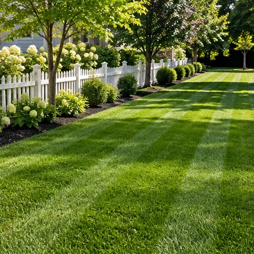
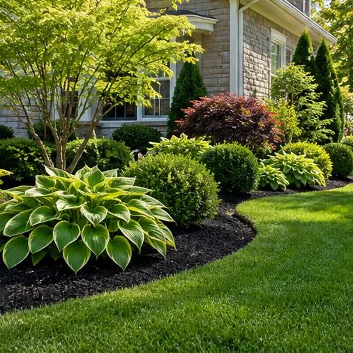
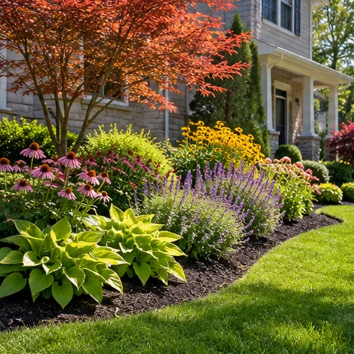
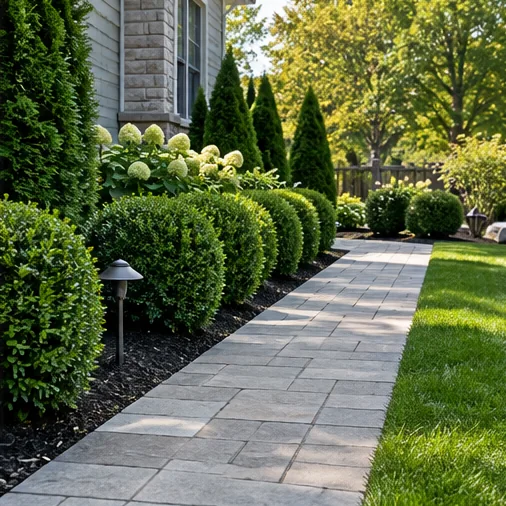

RECLAIM YOUR WEEKENDS. LOVE YOUR OUTDOORS.
A Better-Looking Yard
Starts Here.
From the first mow to the finishing touches, we're here to make everyday outdoor spaces feel a little more extraordinary.
✳ WHAT WE CAN HELP WITH
Good care makes
all the difference.
Think of us as the extra set of hands your yard has been asking for. Practical services, a straightforward process, and attention to the little things.
See all servicesLawn mowing
& maintenance
A fresh-cut look, week after week 02 / FRESH DETAILS✳Mulching &
bed maintenance
Beautiful borders, neatly kept 03 / THE FINISHING TOUCH⌁Shrub & hedge
trimming
Tidy shapes, polished curb appeal 04 / NEW LIFE❋Landscape
planting
Color, texture, and fresh growth 05 / A FRESH START◌Seasonal yard
cleanups
Clear the clutter, enjoy the season 06 / EVERY EDGE╱Lawn edging
& detailing
The little lines that make it pop Service list is illustrative and subject to confirmation with the business owner.
✳ INSPIRATION FOR YOUR OUTDOORS
Picture the
possibilities.
The details have a way of transforming the whole feeling of a space. Here's a little inspiration for yours.
Explore the inspiration gallery ↗


These are AI-generated design illustrations, not completed customer projects.

A YARD WORTH COMING HOME TO ✳THE SIMPLE THINGS, DONE RIGHT
A little attention.
A whole lot to love.
Great outdoor spaces don't have to be complicated. We believe in making it easier to care for yours.
Clear communication
Start with an easy estimate request and a conversation about what your yard needs.
Care for the details
From clean lines to thoughtfully maintained beds, the small details make a visible difference.
Services built around home
A practical range of residential landscaping options, with no need for an elaborate project plan.
✳ FROM HELLO TO HAPPY YARD
Easy as one, two, green.
Good yard care starts with a simple conversation.
Tell us about your yard
Share your location, what you're looking for, and any helpful details.
Talk through the details
Connect with the team to confirm scope, availability, and next steps.
Plan the right care
Choose the services that make sense for your home and your outdoor space.
YOUR NEIGHBORHOOD, YOUR OUTDOORS
Local care,
right where you live.
Contact us with your ZIP code or city to ask about availability in your area.
Check your location ↗GIVE YOUR YARD A LITTLE LOVE
Let's make the outside
feel like home.
Tell us what you're dreaming up — or what you'd simply like to cross off your weekend list.
Get your estimate started ↗